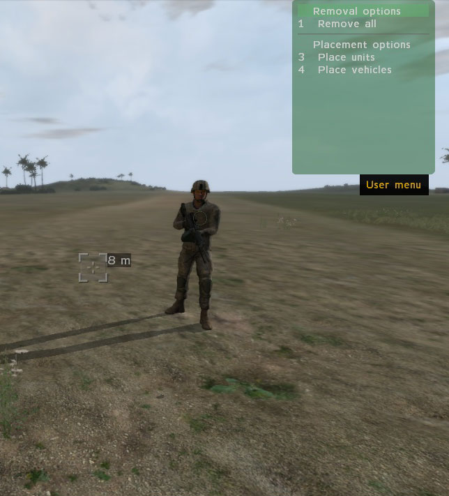
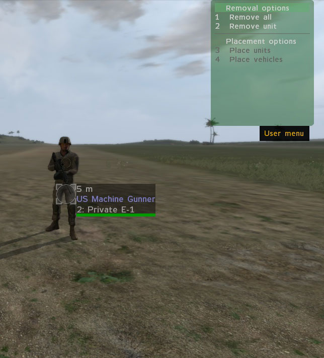
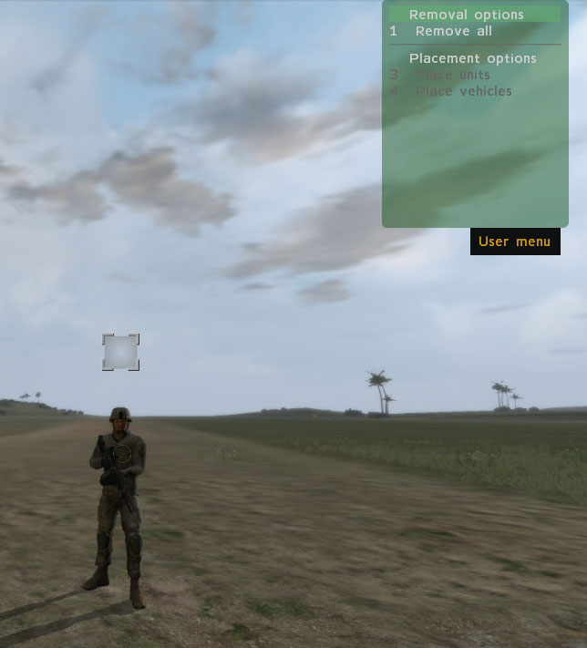

Custom Command Menus

Introduction
Custom command menus (like the standard one opened via the <0> key) can be created either inside a mission (via scripts) or via addons (to be used in *any* mission), or custom entries can be added to the existing command menu (which will then be shown in the "Communication" group).
Menu definition
via Script
A custom menu is defined via a global array, which contains the definitions for the menu entries.
It can have multiple sub-levels, and can be changed dynamically, by reconfiguring the values in the array.
Each menu (the main one, as well as each of the possible sub-menus) have to be defined in separate arrays. The naming is not limited, but in order to avoid possible conflicts with other global variables, they should start with a unique identifier (e.g. "MYMENU_menu1").
To display the custom menu, use the showCommandingMenu command:
showCommandingMenu "#USER:MY_MENU_communication"
To add the custom menu to the standard command menu, assign its definition array to BIS_MENU_GroupCommunication. It will then be available under the "Communications" entry in the regular command menu (press 0-8 to access it):
BIS_MENU_GroupCommunication =+ MY_MENU_communication
Menu syntax
First array element:[title,standard_cursor]
title: String - Label to be shown at bottom of menu (should not be empty, otherwise just a black block will be shown).
standard_cursor: Boolean - If set to true, then custom icons (as defined in menu entries below) will not be displayed.
Second and higher array elements. (Can be as many as needed - up to 10 will fit into menu frame. More than that can be displayed, but will drop out of frame.):[label, key, submenu, type, script, visible, active, icon]
label: String - Displayed caption for menu selection
key: Array: Key-press that can activate selection. 0: no key, 1: <Escape>, 2...9: <F1>...<F10>, 10,11,12,...: Number 9,10,"-", and the rest of the keyboard (corresponding to DIK assignments)
More than one key can be assigned, but only the first will be displayed in the menu.submenu: String - User menu name string (eg "#USER:MY_SUBMENU_NAME" ), "" for script to execute. Must be global, and preceded by "#USER:".
type: Number -
-1: separator line (any defined title text is ignored)
-2: no action (used for group headers, etc.)
-3: hides command menu
-4: goes up one level in the menu
-5: executes the defined script
script: Array: Always defined in the following syntax: [["expression",command]] Command to be executed on activation (if type==5 and submenu==""). No arguments are passed.
visible: Number - 1: menu entry is visible, 0: hidden. Can use system variables (see list Conditions).
active: Number - 1: menu entry is highlighted, 0: grayed out. Can use system variables (see list Conditions).
icon: String - Path to a custom cursor to show when selection is active. (Only OVERLAYS the already existing cursor, so for now not useful.) (optional)
Example
Demo mission: CustomCommandMenus.zip
// only show placement option if the cursor is on the ground, but NOT pointing at a unit or vehicle
_placementCondition = "CursorOnGround * 1-CursorOnGroupMember * 1-CursorOnEmptyVehicle";
// main menu (contains some top-level actions ("Removal options") and calls to sub-menus (which are defined below)
MY_MENU_communication =
[
["Custom Menu",true],
["Removal options", [0], "", -2, [["expression", ""]], "1", "1"], // header text for removal options
[" Remove all", [2], "", -5, [["expression", "['remove','all'] execVM 'place.sqf'"]], "1", "1"], // option is always shown
[" Remove unit", [3], "", -5, [["expression", "['remove','unit'] execVM 'place.sqf'"]], "CursorOnGroupMember", "CursorOnGroupMember"], // only show option if cursor is on a group member
[" Remove vehicle", [3], "", -5, [["expression", "['remove','vehicle'] execVM 'place.sqf'"]],"CursorOnEmptyVehicle", "CursorOnEmptyVehicle"], // only show option if cursor is on an empty vehicle
["(separator)", [3], "", -1, [["expression", ""]], "1", "1"], // separator line
["Placement options", [0], "", -2, [["expression", ""]], "1", "1"], // header text for placement options
[" Place units", [4], "#USER:MY_MENU_placeUnit", -5, [["expression", ""]], "1", _placementCondition], // option is always shown, but can only be selected if cursor condition is fulfilled
[" Place vehicles", [5], "#USER:MY_MENU_placeVehicle", -5, [["expression", ""]], "1", _placementCondition]
];
// sub-menu to create units
MY_MENU_placeUnit = [
["Unit placement",true],
["Type of unit to place", [0], "", -2, [["expression", ""]], "1", "1"],
[" Unarmed", [2], "", -5, [["expression", "['place','unit','VBS2_US_ARMY_Interpreter_W'] execVM 'place.sqf'"]], "1", _placementCondition],
[" Machinegun", [3], "", -5, [["expression", "['place','unit','VBS2_US_ARMY_MGunner_W_M249_none'] execVM 'place.sqf'"]], "1", _placementCondition],
[" Anti-Tank", [4], "", -5, [["expression", "['place','unit','VBS2_us_army_ATsoldier_W_Javelin_none'] execVM 'place.sqf'"]], "1", _placementCondition]
];
// sub-menu to create vehicles
MY_MENU_placeVehicle = [
["Vehicle placement",true],
["Type of veh. to place", [0], "", -2, [["expression", ""]], "1", "1"],
[" Land Rover", [2], "", -5, [["expression", "['place','vehicle','VBS2_AU_Army_Landrover_D_X'] execVM 'place.sqf'"]], "1", _placementCondition],
[" Humvee", [3], "", -5, [["expression", "['place','vehicle','VBS2_US_ARMY_M1114_D_X'] execVM 'place.sqf'"]], "1", _placementCondition],
[" Abrams", [4], "", -5, [["expression", "['place','vehicle','VBS2_US_ARMY_M1A1_D_X'] execVM 'place.sqf'"]], "1", _placementCondition]
];
// open the custom menu
showCommandingMenu "#USER:MY_MENU_communication";
via Config
Custom menus can also be defined in an addon.
The definitions mirror those of the scripted syntax, but the "command" property (which corresponds to the "type" property for scripted definitions, where it is a number between -1 and -5) can also be a string in a config. In that case the command defined in this string will be executed upon opening the menu it is shown it. (If there are multiple menu entries with script commands, they will all be executed!)
The standard VBS2 command menu is defined in RscGroupRootMenu.
Example
Demo addon: MY_CommandMenu.zip
// definition of main custom menu
class MY_CustomMenu { // this class name has to be used in the showCommandingMenu command
title="Custom Menu"; // custom label at the bottom of the menu
access=0;
atomic=0;
vocabulary="";
contexsensitive=1;
// items in main menu
class Items {
// selectable action (always visible & active)
class RemoveAll {
title=" Remove all"; // visible label
shortcuts[]={2}; // keys assigned to action
show="1"; // visibility condition
enable="1"; // activation condition
command=-5; // type of entry (-5: executable action)
eventHandler="hint 'remove all'"; // action to be performed when selected
speechId=0;
};
// action to bring up the submenu 'MY_CustomMenu_PlaceUnit'
class PlaceUnit {
title=" Place unit";
shortcuts[]={4};
show="1";
enable="CursorOnGround * 1-CursorOnGroupMember * 1-CursorOnEmptyVehicle";
menu="MY_CustomMenu_PlaceUnit"; // this option opens a sub-menu defined elsewhere
speechId=0;
};
};
};
Conditions
The condition string that controls whether a menu entry can be seen or selected can contain one or more of the keywords listed below.
Each of them is determined by the engine, and automatically assigned either a 1 (true) or 0 (false) value. It is NOT possible to use regular script commands in this condition string!
Keywords can be negated by subtracting them from 1 (e.g. "1-CursorOnGround" will only be true if the cursor is pointed at the sky), and combined by multiplying them (e.g. "CursorOnGround * IsCommander").
AmmoLow: Player's ammo is low (last magazine)
AreActions: Menu entry is an action (as opposed to a sub-menu, for example)
CanAnswer: Is able to reply to radio messages
CommandsToGunner: Can give orders to gunner
CommandsToPilot: Can give orders to driver/pilot
CursorOnEmptyVehicle: Cursor is pointed at an empty vehicle
CursorOnEnemy: Cursor is pointed at an *identified* enemy
CursorOnFriendly: Cursor is pointed at unit of same side
CursorOnGround: Cursor is pointed at ground
CursorOnGroupMember: Cursor is pointed at group member
CursorOnGroupMemberSelected: Cursor is pointed at selected group member
CursorOnHoldingFire: Cursor is pointed at group member that has been ordered to hold fire
CursorOnNeedFirstAID: A non-medic unit is selected, and the cursor is pointed at an unconscious unit
CursorOnNeedHeal: A medic is selected, and the cursor is pointed at a heavily injured (damage>=.45) or unconscious unit
CursorOnNotEmptySubgroups: Unit under cursor is in different subgroup than player
CursorOnVehicleCanGetIn: At least one of currently selected units isn't in vehicle under cursor
FormationDiamond: Group's formation is "DELTA" (diamond)
FormationLine: Group's formation is "LINE"
FuelLow: Player's vehicle is low on fuel
HasRadio: Player has radio actions available
IsAlone: No group members, or group members confirmed dead
IsAloneInVehicle: Only unit in vehicle
IsCommander: Vehicle commander (or driver if turret-less). If not in vehicle, then true for group leader.
IsLeader: Group leader (group must have members)
IsSelectedToAdd: Left or right control key is pressed
IsTeamSwitch: Team switching is enabled
Multiplayer: Multiplayer session in progess
NotEmpty: Group members have been selected
NotEmptyBlueTeam: Group members have been assigned to team Blue
NotEmptyCommanders: A unit commanding a vehicle is currently selected
NotEmptyGreenTeam: Group members have been assigned to team Green
NotEmptyInVehicle: Group members in a vehicle have been selected
NotEmptyMainTeam: Player commands subordinates
NotEmptyRedTeam: Group members have been assigned to team Red
NotEmptyYellowTeam: Group members have been assigned to team Yellow
NotEmptySoldiers: At least one of selected units isn't in vehicle (type of unit doesn't matter-can be soldier, civilian, or even animals)
NotEmptySubgroups: At least one of selected units is in different subgroup than main subgroup of its group (e.g. in a different vehicle than the player)
PlayableLeader: Leader of player group is a playable unit
PlayableSelected: Only one unit is selected and it is playable
PlayerOwnRadio: Player has radio actions available
PlayerVehicleCanGetIn: Player's vehicle have some free seats (even if locked)
SomeSelectedHaveTarget: At least one of the group members has a target assigned
SomeSelectedHoldingFire: At least one of the group members has been ordered to hold fire
VehicleCommander: Vehicle commander (or driver if turret-less). Only true if in vehicle.
Output
|
 |
 |
 |
For the custom menu shown above the conditions for the upper part of the menu ("Removal options") are:
visibility:"CursorOnGroupMember" (only shown when cursor is on group member)
selection:"CursorOnGroupMember" (can only be selected when cursor is on group member)
For the lower part ("Placement options") the conditions are:
visibility:"1" (always visible)
selection:"CursorOnGround * 1-CursorOnGroupMember" (can only be selected when cursor on ground, and NOT on group member)
The results are as follows:
1st image: Cursor is on the ground, but is not pointed at a group member, so the option to place a unit at that position is visible and can be selected.
2nd image: Since the cursor is pointed at the group member, "CursorOnGroupMember" will return 1, and make the condition negative. Therefore, the option the create a unit at that location is disabled (even though it is still visible).
3rd image: The cursor is pointed at the sky (CursorOnGround returns 0), so the removal options are hidden, and the placement options disabled.